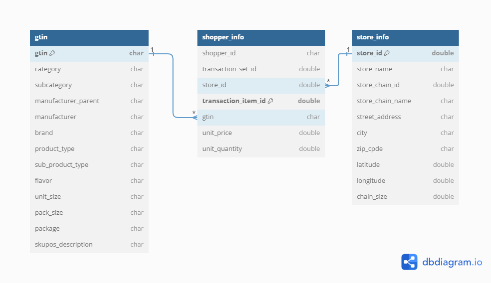

# Load required libraries using pacman for convenience
# pacman will check if the package is installed, install it if not, and then load it for use
library(pacman)
p_load(dplyr,readr,tidyverse,ggplot2,modelsummary,GGally,factoextra)
# Read in the shopper_info dataset
# This dataset contains detailed information on shoppers and their transactions for July 2023
shopper_info <- read_csv("https://csu-arec-330.github.io/materials/unit_02/inputs/shopper_info.csv")
# Read in the GTIN dataset
# This file links products to their Global Trade Item Numbers, akin to SKUs or UPCs
gtin <- read_csv("https://csu-arec-330.github.io/materials/unit_02/inputs/gtin.csv")
# Read in the store_info dataset
# Contains details about each store, linkable to shopper_info via store_id
store_info <- read_csv("https://csu-arec-330.github.io/materials/unit_02/inputs/store_info.csv") Week 10 Lab: Visualizing and Exploring Cross-Sectional Data in Tableau

This Lab Contributes to Course Objectives: 1, 3, 4, 5, 7, 8
Learning Objectives Tableau
Understand Tableau geocoding capabilities
Explain the different use cases of symbol and filled maps
Create symbol and filled maps
Customize Tableau maps
Aggregate individual-level data by geographic region
Part 1: Geocoding
The defining characteristic of cross-sectional data is that we observe values of variables at a single point in, or cross-section of time. Often, but not always, cross-sectional data have geographic components that allows us to use Tableau’s mapping features when creating visualizations. Effective analysis of cross-sectional data begins with estimating and conveying useful summary statistics. Today, we will spend most of our time discussing how to do this with spatial data.
Tableau’s Geocoding
If you want to analyze your data geographically, you can plot your data on a map in Tableau.
When building map views, Tableau supports any latitude and longitude coordinates, as long as they are in decimal degrees. Tableau can also recognize and geocode the following geographic information types:
Airport Codes
Cities
Countries
Regions
Territories
States
Provinces
Postcodes
Core Based Statistical Areas (CBSAs)
Metropolitan Statistical Areas (MSAs)
U.S. Area Codes
Congressional Districts
Zip Codes
If you have geographic delineations besides these, you will have to use crosswalks or some other means to convert the delineations to one of these forms, or to generate latitudes and longitudes for specific points (e.g., addresses).
Tableau’s Spatial Data Capabilities
Tableau can also connect to the following spatial file types:
Shapefiles
KML files
GeoJSON files
TopoJSON files
Esri File Geodatabases
These types of files include detailed geographic information that enables us to plot shapes and single points.
Symbol vs. Filled Maps
Symbol Maps
A symbol map visualizes quantitative data across geographic locations and is particularly effective for displaying variations or patterns across different areas. This type of map can highlight individual store locations, distribution points, or any geographical data point associated with numeric values.

Data Requirements for Symbol Maps
To create a symbol map in Tableau, ensure your data source includes:
Quantitative Values: Numeric data that you want to visualize (e.g., sales volume, customer count). These values will determine the size or color of the symbols on the map.
Geographic Information: Latitude and longitude coordinates are preferred for precision. However, Tableau can also recognize and plot data using geographic locations (e.g., city names, postal codes, country names) provided they are correctly formatted.
Steps to Create a Symbol Map in Tableau
Connect Your Data: Start Tableau and connect to your data source.
Prepare Your Data: Ensure your geographic fields (e.g., latitude and longitude) are recognized by Tableau. If necessary, you might need to set the geographic role of your fields by right-clicking the field name in the Data pane and selecting “Geographic Role.”
Create the Map: Drag your geographic field to the Rows or Columns shelf. Tableau automatically creates a map view. If using latitude and longitude, drag them to the respective shelves.
Add Your Data Layer: Drag the field representing your quantitative values to the “Size” mark or “Color” mark in the Marks card. Adjust the size and color to reflect the data accurately.
Customize Your Map: Use the “Map” menu to adjust the map’s background, borders, and labels for better readability and impact. Consider adding filters or additional layers for interactivity and deeper analysis.
Tips for Effective Symbol Maps
Variation in Values: Symbol maps are most impactful when there’s significant variation in the quantitative values being represented. If your data points have similar values, consider using color gradients instead of size to represent the data, as slight differences in color can be more discernible.
Symbol Size and Overlap: Adjust the size of your symbols to ensure they are visible and do not overlap excessively, especially in areas with many data points. Tableau allows you to scale the size of symbols based on the view or to set fixed sizes.
Annotations and Tooltips: Enhance your map with annotations to highlight key locations or trends. Customize tooltips to provide additional information about each symbol when hovered over.
Legends and Labels: Ensure your map includes a clear legend for size and color indicators. Use labels sparingly to maintain map clarity, focusing on major points of interest.
Filled Maps
Filled maps, also known as choropleth maps, are powerful visual tools for displaying how quantitative or qualitative values vary across geographic regions. They color-code regions (such as countries, states, or counties) based on the data values they represent, making it easy to see relative differences in data distribution spatially. For instance, to analyze and compare rental rates across Colorado counties, a filled map provides a clear visual representation of spatial comparisons.

Data Requirements for Filled Maps
To create an effective filled map in Tableau, your data source needs to include:
Quantitative or Qualitative Values: These values determine the color intensity of each geographic region on the map. Quantitative data could be numerical values like population size or average income, while qualitative data could include categorical values that are ranked or ordered.
Geographic Locations: The data must contain geographic location information that Tableau recognizes (e.g., country names, state names, postal codes). For more specific or customized geographic areas, such as electoral districts, you may need custom polygons provided by spatial data files (e.g., Shapefiles).
Steps to Create a Filled Map in Tableau
Prepare Your Data: Ensure geographic location fields in your dataset are correctly identified by Tableau. You may need to set or verify the geographic role for these fields in the Data pane.
Drag and Drop to Create the Map: Double-click on the geographic field in your data pane. Tableau automatically creates a map based on the location data.
Encode Data with Color: Drag the field representing the values you wish to visualize onto the “Color” mark on the Marks card. Tableau will apply a color scheme to the map regions based on these values.
Adjust Color Palette: Customize the color palette to enhance readability and effectively communicate the data story. Use diverging color schemes for qualitative data and sequential schemes for quantitative data.
Refine and Customize: Use the “Map” options to adjust map features, such as borders and labels. Add legends, annotations, and tooltips to make your map more informative and interactive.
Tips for Effective Filled Maps
Choose the Right Data: Filled maps are best suited for data that varies across defined geographic regions. Ensure your data is appropriate for this type of visualization, focusing on regional differences or patterns.
Simplify for Clarity: Avoid overloading your map with too much data or too many categories. If your map becomes too cluttered, consider simplifying the data or using filters to allow viewers to focus on specific aspects.
Use Color Wisely: Select color palettes that are easy to read and interpret. Use sequential colors for quantitative data to show a gradient of values, and diverging colors for data with a critical midpoint.
Highlight Important Data: Use annotations or focused color highlights to draw attention to significant areas or patterns you want to emphasize, such as regions with exceptionally high or low values.
Consider Geographic Scale: The chosen geographic scale can impact the interpretation of your data. Be mindful of how zoom level and regional boundaries influence the perception of data distribution and density.
Knowledge Checks
Knowledge Check 1: Suppose we have county-level data on average gas prices last year. What type of map would you use to show this information?
For county-level data on average gas prices last year, a filled map would be the most suitable choice. It would allow you to color-code each county based on the average gas price, showing spatial variations across the region.
Knowledge Check 2: Suppose we have gas station-level data on gas prices yesterday. What type of map would you use to show this information?
For gas station-level data on gas prices yesterday, a symbol map would be more appropriate. It would let you place symbols at each gas station’s location, with symbol sizes or colors representing the price of gas, providing detailed location-specific price information.
Geocoding Application
1. Creating a Symbol Map
Connect to
arizona_grocery_foot_traffic.csv: Start Tableau and connect to the dataset.Prepare the Data: Check that
LongitudeandLatitudeare recognized by Tableau as geographic fields. If not, set their geographic roles appropriately by right-clicking each field in the Data pane and selecting Geographic Role > Longitude or Latitude.Drag Longitude and Latitude: Move the
Longitudefield to the Columns Shelf and theLatitudefield to the Rows Shelf to initiate the creation of a map. If Tableau does not automatically recognize them as geographic fields, you might need to change their data type to dimensions.
Note: This file is a very very VERY small slice of cell phone visit data from the company Safegraph. The slice includes all grocery retail stores in Arizona with a sufficiently large number of visitors in September of 2021. Visitors (including you if you happened to be in Arizona at that time…) are tracked via their cell phones. The data includes information on the store (name, location, NAICS code, etc.), the number of visits, visitors (unique cell phones), the median distance traveled to shop there, and the median amount of time spent there.
Visualize Store Types: To explore the variety of grocery stores, drag the
Top Categoryfield onto the Color card. This action will color-code the map symbols according to the type of grocery store, allowing you to quickly see which category is most prevalent across Arizona.Analyze Visitor Counts: To understand the popularity of these stores, drag the
Raw Visit Countsfield onto the Size card. This will adjust the size of each symbol on the map based on the number of visits, making it easy to identify which stores attract the most visitors.Enhance Tooltips: For more detailed information about each store, add the
Location Nameto the Tooltip card. This ensures that when you hover over any symbol on the map, you can see the store’s name along with other data you’ve chosen to include.
You Do It: Create a New Symbol Map
Start with the Cell Phone Data: Follow the initial steps to set up another symbol map. This time, experiment with different attributes for colors, size, and tooltips. For instance, you might choose to visualize the median distance traveled using the size of the symbols, or the median amount of time spent in the store as the color.
Experiment with Geographic Fields: Instead of using precise longitude and latitude, try creating a map based on
Cityand associate it withRaw Visit Countsby draggingCityto the Columns Shelf andRaw Visit Countsto the Rows Shelf. Use the Show Me menu to select Symbol Map. This visualization will provide a more aggregated view, showing visitor counts per city.Change Aggregation: Modify the aggregation of
Raw Visit Countsfrom sum to average by right-clicking on the field in the Marks card and choosing Measure(Sum) > Average. This adjustment shows the average number of visits per store within each city or map symbol, offering insights into typical store performance rather than total visits.
2. Creating a Filled Map
Filled maps provide a powerful way to visualize data that varies across geographic regions, using color to represent the intensity or magnitude of a variable within predefined areas like postal codes, counties, or countries. Let’s apply this to our cell phone data.
Select the
Postal Codeand move it to the Columns Shelf, andRaw Visit Countsand move it to the Rows Shelf.Navigate to the Show Me Menu; you should have the option to select either a symbol map or a filled map. Choose the filled map.
Analyze the Visualization:
Understanding the Map: This map colors each postal code area based on the
Raw Visit Counts, showing where grocery stores receive higher or lower volumes of traffic.Multiple Attributes: While filled maps are excellent for visualizing one main attribute per geographic area, layering multiple store attributes directly on the map might be challenging.
Add Store Information: To provide context on the types of stores within each postal code, drag the
Top Categoryfield into the Tooltip editor. Use the Insert button in the editor or type in the field name surrounded by< >, like<Top Category>.
Does the symbol map or filled map provide a clearer understanding of the data?
Filled maps are great for showing density or intensity over areas, while symbol maps are better for exact locations and attributes of individual points.
3. Customizing Your Map
Tableau offers powerful customization options for maps, including background layers and integrated data sources. Follow these specific steps to enhance your map and explore a combination of symbol and filled map layers.
- Adding Background Layers
Access Background Layers: Right-click on your map and select
Background Layers....Explore Layer Options: Browse through the map layer options and select a combination that enhances the readability and appeal of your map.
- Integrating Data Sources
Select Integrated Data Source: Click the drop-down menu under to
Data Layerand choose one of Tableau’s integrated data sources.Adjust Geographic Level: Change the geographic level at which this information is displayed, tailoring it to the scale of your analysis.
You Do It: Combine Symbol and Filled Maps
Start with the Cell Phone Data: In your Tableau workspace with the cell phone data, create a new worksheet.
Create a Filled Map: Show total visit counts by postal code using a filled map.
Copy Latitude Measure: Command-click (Mac) or Control-click (Windows) the
Latitudemeasure on the Rows shelf and drag it to the right to duplicate it.Adjust Marks Card: For the second map pane, remove the
Postal Codefield. Then, drag both theLatitudeandLongitudefields to the Details card on the Marks card.Customize with Data: Add
Top Categoryto the Color card to differentiate store types andDistance from Hometo the Size card to represent median travel distances.Enable Dual Axes: Right-click the second
Latitudefield on the Rows shelf and choose Dual Axis.Finalize Formatting: Apply any additional custom formatting to your map as desired.
Interpretation: This combined map offers a comprehensive view of customer behavior, highlighting areas with high visit counts and distinguishing stores by category and customer travel distance. It allows for spatial analysis of store popularity and accessibility, providing valuable insights into consumer preferences and mobility patterns.
Part 2: More Exploratory Data Analysis in R
The second part of the lab is to acquaint you with the three datasets that you will be using for Project 2.

shopper_info.csv
- This is the core file that contains information about the shopper and each transaction they made during the month of July 2023.
gtin.csv
You will link this file with “shopper_info” based on the variable gtin.
GTIN stands for “Global Trade Item Number” and is similar to an SKU or UPC (i.e., barcode).
store_info.csv
- This file contains the store details and can be linked with the “shopper_info” using the variable store_id.
Step 1: Read in Each Data File
Let’s begin by reading the three data files into R.
Step 2: Join the Data
In R, particularly within the dplyr package, join functions are used to merge two data frames by one or more common key variables. Each type of join function serves a different purpose, allowing for various ways of combining data based on the presence or absence of matching key values in the two data frames. Here’s an overview of the different types of join functions provided by dplyr, along with examples for each.

- Inner Join
The inner_join() function merges rows from two data frames where there are matching values in the specified key columns. It returns only the rows with matching keys in both data frames.
Example:
# Join shopper_info and store_info by the common key "store_id"
shopper_store <- inner_join(shopper_info, store_info, by = "store_id")- Left Join
The left_join() function returns all rows from the left data frame, along with matching rows from the right data frame. If there’s no match, the result will contain NA for the missing values from the right data frame.
Example:
# Keeping all rows from shopper_info and adding information from store_info where possible
shopper_store_left <- left_join(shopper_info, store_info, by = "store_id")- Right Join
Conversely, right_join() returns all rows from the right data frame, along with matching rows from the left data frame. Rows in the right data frame with no match in the left data frame will have NA for the missing values from the left data frame.
Example:
# Keeping all rows from store_info and adding information from shopper_info where possible
store_shopper_right <- right_join(shopper_info, store_info, by = "store_id")- Full Join
The full_join() function combines all rows from both data frames, inserting NA for missing matches on either side.
Example:
# Combining all information from both shopper_info and store_info
shopper_store_full <- full_join(shopper_info, store_info, by = "store_id")Other types of joins that we will not cover include semi_join() and anti_join().
You Do It
Join the shopper_info.csv file with the store_info.csv file so that you keep all transaction information, even if there is no store match, and call this data frame shopper_store_join.
What join function should you use? How many observations do you expect to retain?
Code
shopper_store_join <- left_join(shopper_info, store_info, by = "store_id")How many observations should you have? In other words, what are the dimensions of your joined data frame?
Code
total_observations <- nrow(shopper_store_join)
print(total_observations)Write the data frame to a csv file called shopper_store_join.csv.
Code
write_csv(shopper_store_join, "shopper_store_join.csv") Step 3: Plot the Store Locations
Using the same steps as Part 1 of lab, connect to shopper_store_join.csv and create a symbol map plotting the locations of the convenience stores.
You will continue to explore these data in your next problem set.